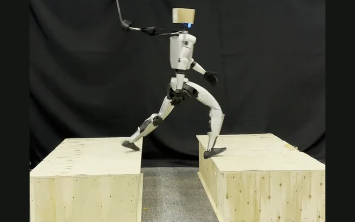
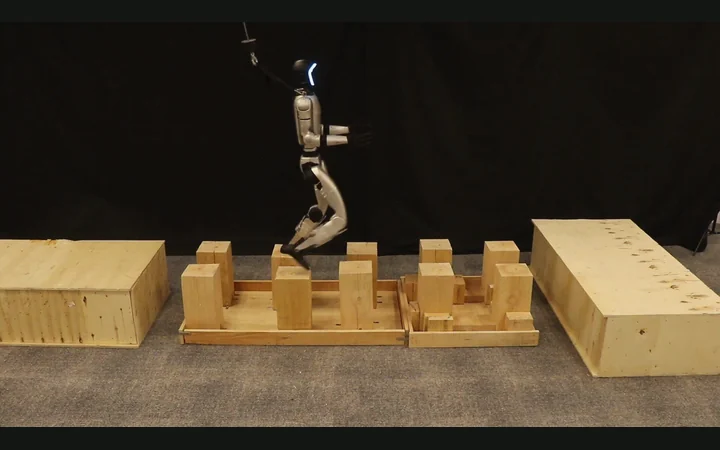
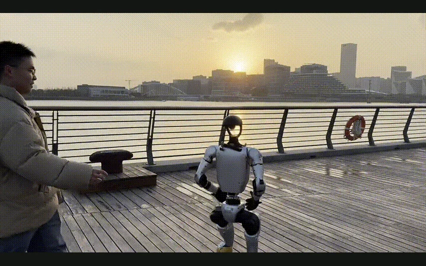
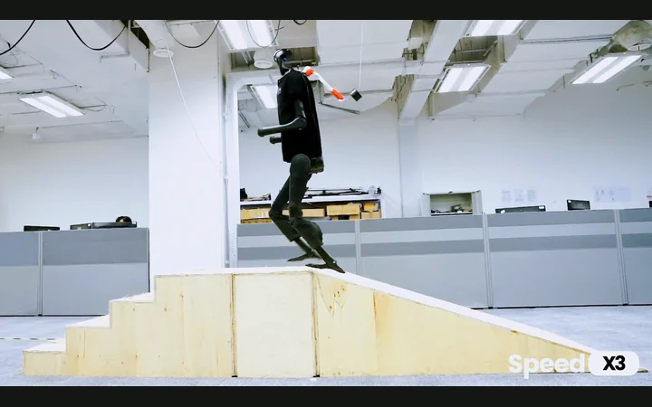
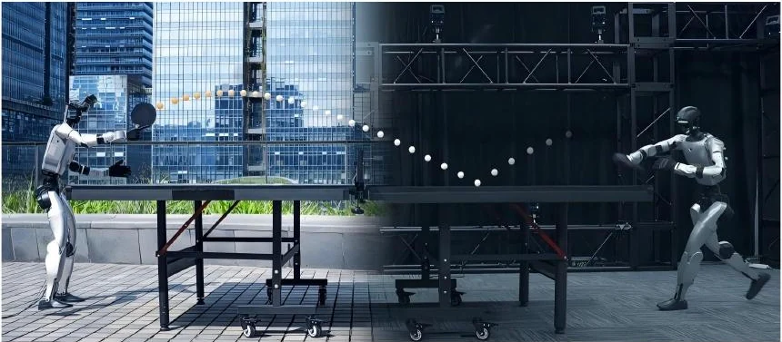
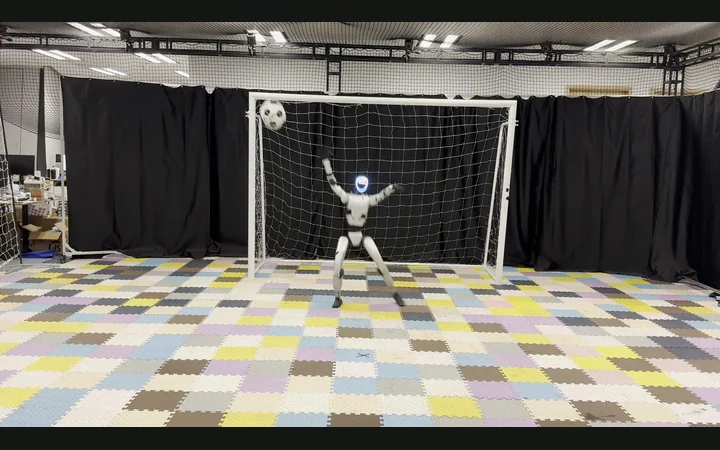
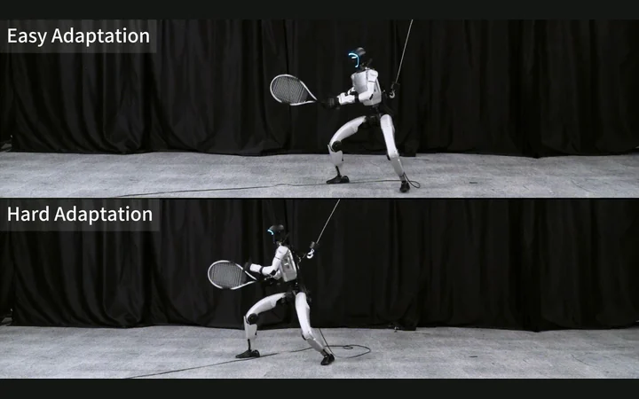
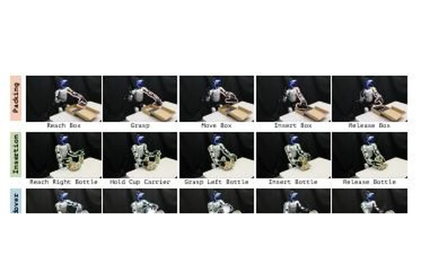
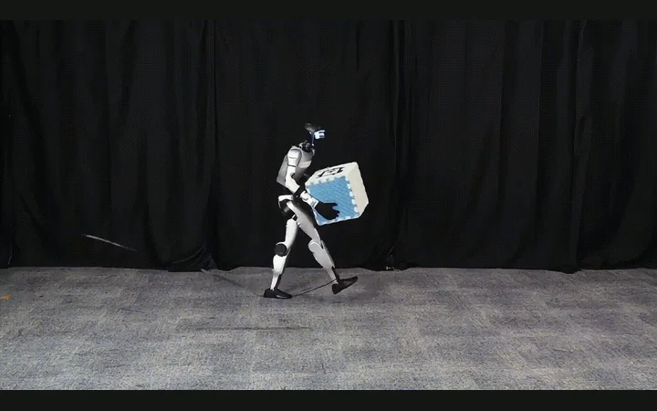

Humanoid robotics · Whole-body control· Reinforcement learning
Junli Ren 任峻立
I am a final-year PhD student at HKU MMLab, advised by Prof. Ping Luo. My research focuses on whole-body control, reinforcement learning, and human–object interaction. I am currently visiting BAIR at UC Berkeley under the supervision of Prof. Masayoshi Tomizuka.
Previously, I was a research intern with the Humanoid Research team at Shanghai AI Lab, working with Dr. Jiangmiao Pang and Dr. Jingbo Wang. I received my M.Eng. and B.Eng. from Tsinghua University under Prof. Guijin Wang, where I also interned in Bytedance and Tsinghua AIR.
Selected publications
01
Locomotion
Robust and agile mobility across challenging terrain.



03
High-dynamic whole-body sports
Fast, expressive interaction that couples perception with full-body control.



04
General whole-body tasks
Adaptable skills for scene interaction and contact-rich manipulation.

